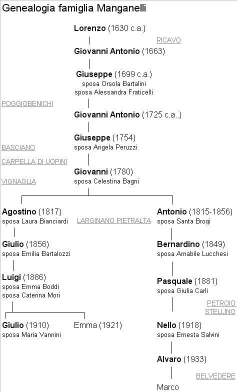
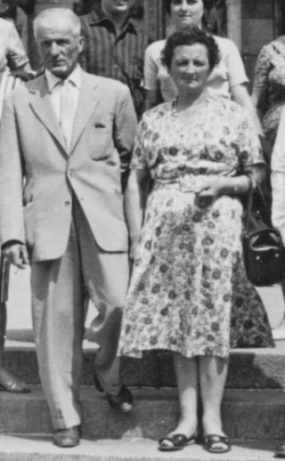

Quercegrossa (Ricordi e memorie)
CAPITOLO II - FAMIGLIE DEL '900
Indice dei Capitoli
Indice Famiglie del '900
MACINAI (1919/20 - 1927); mezzadri; Petroio.
Coloni della fattoria di Petroio i Macinai sono documentati dal 1921, ma probabilmente il loro arrivo risale all’immediato dopoguerra. Nel nostro popolo maturarono una permanenza di circa dieci anni perché la loro partenza avvenne il 3 marzo 1927 quando lasciarono il podere ai Guarducci. Sconosciuta la loro provenienza, come la loro meta successiva. Sappiamo che il capoccio era Giuseppe del quale si ricordano i figli Gioconda, sposa a Quercegrossa con Romano Bianciardi di Castellina; Cesare per il suo matrimonio del 24 gennaio 1925 con Ida Bogi del Larginanino e la nascita della primogenita Luisa, battezzata a Vagliagli nel 1926; Angelo e la moglie Assunta Gori Savellini che dal '21 al '26 gli diede Guido, Mario e Gino. Alla data indicata partirono per sempre.
MAGGI (1941-1964); braccianti/terzuomo; Passeggeri; da Vagliagli.
Piccola famiglia di quattro persone giunta a Passeggeri verso il 1944/45. Agostino di Giuseppe Maggi era un bracciante di 40 anni proveniente da Vagliagli, nato in una numerosa famiglia comprendente un fratello e sette sorelle. La moglie di Agostino, Maria Minucci nativa di Radda e orfana del babbo Francesco morto in guerra, viveva con gli zii al podere Vallenuova della Canonica a Cerreto. Si ricorda di lei un periodo di lavoro a Milano con la zia. Si sposarono nella chiesa parrocchiale della Canonica a Cerreto l'11 novembre del 1934. Dal matrimonio nascono due femmine: Oriana nel 1935 e Anna nel 1940. Nel giugno del 1941 alla chiusura dell'anno scolastico lasciano Vagliagli e si trasferiscono a Passeggeri nella casa pigione. Dopo pochi anni il senatore Sarrocchi, apprezzate le qualità di Agostino, lo sposterà nella fattoria accanto alla villa. Agostino e la famiglia saranno a disposizione giorno e notte. Lui come terzuomo di fattoria farà di tutto compreso il sottofattore e anche il guardia e capo guardia; la moglie al servizio in villa per le signorine. Passò la guerra e fu ingaggiato anche Enzo, fratello di Agostino, come autista. Nota figura a Quercegrossa Enzo Maggi visse fino agli anni Settanta. La figlia di Agostino, Oriana, frequentò Quercegrossa, apprese il catechismo con don Ottorino che poi insegnava ai ragazzi di Passeggeri, e quando serviva faceva da segretaria ai Sarrocchi. Il 26 giugno del 1959 si maritò con il falegname Marcello Bruni e lo seguì a Fonterutoli. L'altra sorella Anna sposò cinque anni dopo un Vannini di Poggibonsi. Poco dopo il matrimonio, Anna prese con sé gli anziani genitori e i Maggi chiusero la loro storia di Passeggeri. Nel 1884 Giuseppe Maggi con il padre Isidoro abitava a Quetolino, in quegli anni appartenente alla parrocchia di Quercegrossa, e morì a Vagliagli nel 1958.
MANGANELLI ALBERTO (1931-1932); mezzadri; Quercegrossa.
Un anno soltanto al podere di Giotto in Quercegrossa per la famiglia di Alberto Manganelli fu Eugenio e la moglie Stefana Becarelli. Erano in otto ed entrarono nel febbraio 1931 per ripartire l’anno successivo e lasciare il podere ai Forni, diretti forse verso Tregole dove dieci anni dopo Dina Manganelli figlia di Alberto sposava Mario Merlotti del Calombaiolo e rientrava a Quercegrossa.
MANGANELLI CELSO (1932/33 - 1938); mezzadri; Casino.
Un'altra famiglia Manganelli che si affacciò a Quercegrossa senza nessun vincolo di parentela con le altre presenti da tempo sul territorio. Devono essere entrati negli anni 1932/33 al Casino di Quercegrossa dove sostituirono i Forni. Celso del fu Innocenzo il capofamiglia con la moglie Angiola Midollini e quattro figli maschi, Anselmo, Giulio, Pietro e Silvio tra i 17 e i 23 anni. Si fermarono cinque/sei anni fino al marzo del 1938 quando lasciarono il Casino agli Stazzoni.
MANGANELLI DONATO (1897-1900); mezzadri; Gallozzole.
Presente alle Gallozzole dal 3 marzo 1897 al 3 marzo 1900, la numerosa famiglia di Donato Manganelli non lasciò traccia del suo passaggio se non qualche battesimo a S. Leonino dei suoi numerosi figli avuti dallo stesso Donato e dal fratello Pasquale. Nativi di Brolio partirono senza mai più tornare.
MANGANELLI GIULIO (1832-1971); mezzadri;
Pietralta/Quetole/Petroio/Quercegrossa; da Basciano (Larginano).
Il cognome Manganelli è diffuso da sempre nei territori senese, aretino e fiorentino e conseguentemente nella parrocchia di Quercegrossa si è registrata la loro presenza fin dal Seicento. L'ultimo Manganelli residente a Quercia, discendente da queste antiche famiglie, fu Giulio che si spense il 28 gennaio 1971 nella sua casetta costruita nell'orto della parrocchia con ingresso dalla strada statale. Non aveva avuto figli e la sua vedova Maria Vannini gli sopravvisse di diciotto anni per morire nella medesima abitazione il 2 luglio 1989. Giulio discendeva da un nucleo familiare presente a Ricavo di Castellina fin dal 1500 e da questo erano sorti numerosi rami che avevano popolato un ampio territorio intorno a Basciano, compresa Quercegrossa dove a cominciare dal 1709 sono documentati a più riprese fino al loro ingresso a Pietralta. Qui resteranno fino agli anni Sessanta del Novecento, quando il rammentato Giulio si trasferirà in paese a Quercegrossa lasciando quel podere dopo circa 130 anni e chiudendo con l'avito mestiere di contadino. Tra gli altri nuclei scaturiti da questa famiglia si rammenta quello importante di Pasquale che dimorò, come vedremo, a Belvederino alla vigilia della Seconda guerra mondiale.

Lorenzo
Lorenzo Manganelli nato intorno al 1630 rappresenta senz’altro il collegamento, purtroppo non documentato, con i Manganelli di Ricavo. Il figlio Giovanni Antonio (1663) e il nipote Giuseppe nel febbraio 1709 entrano nella parrocchia di Basciano al podere di Poggiobenichi, mentre un nipote Lorenzo abita dal 1709 al 1714 all’Olmicino di Quercegrossa. Il rammentato Giuseppe, nato a Ricavo nel 1699 circa, sposa Orsola Bartalini che muore nel 1649 e in seconde nozze l’anno successivo sposa Alessandra Fraticelli. I tre figli della prima moglie portano i nomi di Giovanni Antonio, Giovanni e Francesco Maria. Nel 1731 abitano al podere delle Monache della Madonna di Basciano (Larginano ?) e nel 1748 al podere Sessina della stessa parrocchia. Qualche anno dopo nel 1754, a seguito della divisione della famiglia, troviamo gli antenati di Giulio trasferiti al podere Carpella di Uopini con il capoccio Giovanni Antonio marito di Marianna Brogi e suo figlio Giuseppe che il 16 settembre 1779 sposa Caterina Peruzzi. Un trentennio e, forse nel 1784, fanno entratura al podere Vignaglia vicino al Colombaio. Da qui, nel 1826, dopo circa quaranta anni di permanenza si spostano a Larginano di Quercegrossa, parrocchia di Basciano, e infine a Pietralta.
Pietralta
Quando entrarono a Pietralta nel 1832 provenienti da Larginano i Manganelli erano una buona famiglia di tredici persone con otto adulti, un' anziana e quattro ragazzi. Giuseppe figlio del fu Giovanni Antonio, detto Antonio, e di M. Anna Brogi era in età 74 anni quando arrivò a Larginano e lì vi morì il 29 febbraio 1832. Fu il figlio Giovanni, dodici giorni dopo, a trasferire la famiglia in Pietralta. Due i fratelli che davano forza alla famiglia: Giovanni e Lorenzo. Giovanni con la moglie Celeste Bagni e i figli Luigi di 25 anni, Assunta di 23, Antonio di 17, Agostino di 15 e Santa di 9; Lorenzo di 44 anni sposato a Lorenza Bongini di 34 con i figli Natale di 13 anni e M. Anna di 6. C'era anche una Maria nata nel 1808 e l'anziana mamma Caterina di 76 anni che vivrà fino al 17 aprile del 1841. Nel 1841 troviamo che la famiglia si è divisa, e a Pietralta abita Giovanni ormai 60enne con il figlio Agostino capoccio, mentre Lorenzo si è trasferito con moglie e figli a Quetole. Negli anni seguenti si hanno una serie di matrimoni che daranno vita alle nuove generazioni di Manganelli ed il 1 giugno 1844 nella chiesa di Quercegrossa viene celebrato un doppio incrociato matrimonio fra fratelli con Santa Manganelli che sposa Luigi Brogi di Alessandro e Antonio Manganelli che sposa Santa Brogi di Alessandro. A queste doppie nozze fa seguito il matrimonio di Agostino che nel giugno 1846, all'età di 28 anni, sempre a Quercegrossa, sposa Laura Bianciardi vedova Petrini. Come prevedibile i due matrimoni portano una serie di battesimi in casa Manganelli e subito nascono Giulio nel 1846 e Giuseppe nel 1852 di Agostino. Antonio metterà al mondo Caterina nel 1847, che sposerà un Bruni di Sornano, Teresa, sposata a Poggiobenichi con Antonio Bogi, e Bernardino (1849) che prenderà in moglie Amabile Lucchesi. Alcuni anni dopo il 22 marzo del 1856 Antonio muore all'età di 41 anni seguito dopo sei giorni dalla mamma Celestina. Il figlio di Antonio, Bennardino, resterà ancora per molti anni a Pietralta insieme ai cugini e partirà nel 1906 seguendo il figlio Pasquale che l'anno precedente aveva sposato Giulia Carli. Pasquale lasciò il vecchio podere per trasferirsi prima a Petroio e poi allo Stellino nel popolo di S. Fedele. Questo ramo dei Manganelli rientrerà a Quercegrossa alcuni decenni dopo. Seguendo il nucleo principale di Agostino, cioè i suoi due figli Giulio e Giuseppe, vediamo che il primo prese in moglie Emilia Bartalozzi di Angelo che gli diede Laura nel 1882, partita nel 1903 per S. Leonino moglie di Giulio Vannini, Adele nata nel 1888, partita nel 1907 moglie di Eugenio Meniconi e Luigi nato nel 1887, il futuro capoccio. Da parte di Giuseppe vediamo che si sposò con Palmira Mariotti ed ebbe due figli maschi, Angelo il 4 maggio 1877 e Giovanni il 13 maggio 1880, e due femmine; una di nome Maria il 26 giugno 1876, andata in sposa a Giulio Bruni di Sornano nell'aprile 1901, e l’altra, Assunta, sposa il 21 agosto 1910 di Adolfo Panti di Vagliagli. Mentre si celebravano i matrimoni di famiglia e prima che scadesse il secolo i due fratelli a distanza di due anni perivano entrambi con Giuseppe che morì all'età di 43 anni il 13 aprile 1895 e Giulio in età di 51 anni il 5 settembre 1897.

A seguito di queste morti, dei matrimoni, ben sei in cinque anni, e della partenza di Bernardino troviamo la famiglia Manganelli mantenere ancora un adeguato numero di componenti e pur mancando dati precisi si può così riassumere lo stato di famiglia del 1910: Luigi è il nuovo capoccio che ha sposato il 22 gennaio 1910 a Quercegrossa Emma Boddi di Modesto e il 16 novembre 1910 è nato Giulio.
Nella foto Giulio Manganelli e la moglie Maria.
Dalla parte di Giuseppe sono presenti Angelo con la moglie Emilia Bartalozzi senza figli e il fratello Giovanni sposato nel giugno 1907 con Maria Carli figlia di Pio del Paradiso con la prima figlia Ernesta nata il 2 marzo 1908 e la seconda Pia nata il 12 maggio 1910 tutte battezzate a Vagliagli. Inoltre ci sono le due vedove Emilia e Palmira. Undici persone in tutto. Negli anni seguenti si verifica la tragica scomparsa di Emma la moglie di Luigi il quale dopo alcuni anni si risposerà con Caterina di Tobia Mori della pieve di S. Leonino e il 31 agosto 1921 nascerà una femmina che chiamerà Emma. Improvvisamente nel 1920 morirà anche la moglie di Giovanni a 36 anni e nel 1923 se ne andrà pure l’anziana Emilia Bartalozzi di 74 anni e nel 1928 Palmira di 74 anni, l’ultima di quella generazione. Il quadro familiare alla fine del 1936 si compone di nove persone più un garzone Pietro Santella. Giovanni vedovo con la figlia Assunta; Luigi con famiglia e Giulio che nell'ottobre 1936 ha sposato Maria Vannini a Vagliagli. C'è Angelo vedovo e la piccola Pia, nata all'ospedale di Siena nel 1933 figlia di Assunta e di N.N. Il dopoguerra presenta una situazione invariata poi, dal 1949 al 1950, muoiono gli anziani Giovanni, Angelo, Maria e anche Assunta risulta deceduta. Emma si era sposata l'11 agosto 1947 con Emilio Sanniti di S. Dalmazio ed era tornata a Siena. Negli anni Cinquanta partirà anche Pia e resterà a Pietralta Giulio con la moglie Maria e la mamma Caterina. Poi nel 1957/58 Giulio acquistò la terra della parrocchia e vi costruì la sua casetta lungo la Statale dove si trasferì a metà anni Sessanta. Fu l'ultimo dei Manganelli di Pietralta a Quercegrossa.
MANGANELLI ONORATO (1902-1904) - (1908 - d. f.); mezzadri;
Gallozzole/Erede; da Pievasciata.
A Pievasciata nell’anno 1881 la famiglia di Manganelli Giuseppe di Gasparo abita il podere Poggiarello. Esclusa la moglie Gesuina Zanchi tutti i componenti della famiglia sono nati a Gaiole, compreso il nipote Onorato del fu Isidoro e della fu Assunta Carnacini nato nel 1871 e rimasto orfano. Facile pensare che da Gaiole (Brolio?) siano passati direttamente a Pievasciata. Il capoccio Giuseppe ha avuto tre figli, Andrea e Luigi, che ora sono in età da moglie, e la sedicenne Maria. Sei persone in tutto, in più vive con loro la garzona Amelia Ameli di 8 anni dell'Ospedale di Siena. Facciamo un salto di vent'anni e nel 1902 i Manganelli da Pievasciata entrano al podere Gallozzole di Quercegrossa, con la sola differenza che la famiglia è ora composta da venti persone compreso un garzone. Negli anni immediati si registra la morte del babbo Giuseppe (1904), la nascita di Giuseppe di Andrea, di Nella di Luigi, e il matrimonio di Emilia con Antonio Fanetti del Poderino nel 1905. La famiglia mantiene così il suo alto potenziale e vi fa la parte del leone il capoccio Andrea con la moglie Cesira Salvini e i sei figli. Luigi, da parte sua, con la moglie Maria Gallerini ne ha già cinque. In questo contesto avviene che Onorato in quel 1905 prende la moglie Assunta Carrai sposata il 18 giugno 1903 a Pievasciata, e se ne ritorna a Gaiole. La sua partenza anticipa di un solo anno quella di Luigi che si separa da Andrea per tornare in un luogo sconosciuto di Monteriggioni. Dal 1906 poi anche Andrea lascia le Gallozzole e non abbiamo più notizie di lui. Ma la storia di questa famiglia Manganelli non finisce qui, anzi, deve incominciare. Nel 1908, infatti, ritorna Onorato con la moglie e il figlio Eugenio e rientrano alle Gallozzole per due anni. Poi, nel 1910, avviene il definitivo trasferimento alle Redi di Petroio. Qui ritroviamo anche Luigi che si è ricongiunto al fratello con la sua numerosa famiglia. Si dà così il via ad una lunga permanenza di oltre sessanta anni che vedrà i Manganelli, contadini del Pallini, occuparsi del loro podere in un rapporto di mezzadria che consentì loro un'esistenza dignitosa. Di questi lunghi anni ricca è la cronaca anagrafica in casa Manganelli: dopo Eugenio nascono Sabatino (1911) e Livio (1921), e da parte di Luigi si assiste ai matrimoni di tutte le sue figlie che lasciano così le Redi: Giulia nel 1910 con un Lucchesi di Pontignano; Argia nel 1919 sposa Giovanni dei Carli del Paradiso; Pia nel 1923 prende Luigi dei Meli dell'Olmicino e Nella un Petrazzi di Vagliagli nel 1925. Tra tanti lieti eventi anche fatti dolorosi: Guido di Luigi moriva in prigionia per malattia nel 1918 ed Eugenio, il primogenito di Onorato, moriva il 7 aprile del 1920 a soli 14 anni. Se alle Redi si erano trasferiti in undici, nel 1935 sono ridotti a otto. Si è sposato intanto nel dicembre 1933 Sabatino nella chiesa di Basciano con Rina Pannini della Cornacchia e l’anno dopo nascerà Ivo. Poi, a distanza di dieci anni, arrivano Ivana (1945) e infine Iliana (1952) a completare la famiglia. Nel tempo di guerra ci fu sofferenza per la prigionia di Livio che fece ritorno a casa dopo diversi anni di silenzio. Si ricorda anche un garzone di nome Celestino di grande utilità in quel tempo. Nel 1946 partiva per l'ultimo viaggio Onorato che raggiunse il cugino Luigi defunto nel 1944; Onorato a 76 anni, Luigi, già vedovo, a 84 anni. La moglie di Onorato, Assunta, morirà nel 1960. Della nuova generazione dei Manganelli delle Redi, Ivo prenderà in moglie il 13 settembre del 1966 Marisa Morini di Casagrande di Petroio e anche le due sorelle si formeranno una famiglia: Iliana sposerà Almo Andriolo di Quercegrossa. Negli anni di crisi della mezzadria Sabatino mantenne la sua condizione fino al 1968/69, poi iniziò il nuovo rapporto di salariato fino al 1974, anche con compiti di fiducia nella Fattoria di Petroio. Abbandonate Le Redi si sposterà alle Fornacelle di Siena col figlio Ivo e li finirà i suoi giorni. Poi, improvvisamente, vi morì anche Ivo.
Sabatino Manganelli, a sinistra, Rina Pannini, moglie di Sabatino e Ivo Manganelli da militare
Una sconosciuta Manganelli delle Redi.
MANGANELLI PASQUALE (1937-1939); mezzadri; Belvedere;
dallo Stellino di Tregole.
Ritornando alla storia dei Manganelli di Pietralta, vediamo che nel 1906 Pasquale con la moglie Giulia Carli sposata il 10 giugno 1905, il figlio Pio di 3 anni, e accompagnato dal 60enne genitore Bennardino, lascia i cugini e si sposta al vicino podere di Petroio, per un periodo di sei/sette anni. Infatti risultano presenti al censimento del 1911 e nel 1912, il 28 gennaio, viene battezzato a Vagliagli Antonio di Pasquale “residente a Petroio”, mentre Armando nato il 22 settembre 1913 è battezzato a Tregole. Possiamo quindi fissare nel 1912 la partenza per il podere Stellino di Tregole, parrocchia di S. Fedele, Comune di Radda. Intorno al 1930, dopo diciotto anni di permanenza allo Stellino, Pasquale vive con la moglie Giulia e i suoi otto figli, dopo la morte del babbo Bennardino avvenuta il 26 aprile 1923. Ai citati Pio, Antonio e Armando fanno ora compagnia i fratelli Nello (1908), Livio (1915), Giuseppe (1918), Livia (1917) e Sestilio (1919). Gli anni seguenti allo Stellino vedono il matrimonio di Nello a Radda nel 1932 con Ernesta Salvini di Vittorio, la nascita di Alvaro il 25 giugno 1933 ed Elio il 25 febbraio 1936, poi il ritorno a Quercegrossa nel podere di Belvedere lasciato libero dai Torsoli con entratura il 27 febbraio 1937. Non trascorsero due anni che la famiglia si rimise in cammino per Casarossa presso il Colombaiolo di Malizia dove nel 1956 cessarono di essere contadini. Alvaro di Nello si sposò ed ebbe un figlio chiamato Marco che vive in Siena e con lui ho compiuto la ricerca sui Manganelli.
Pasquale Manganelli e, a destra, il figlio Nello
Sestilio Manganelli in licenza militare, a Belvedere.
|